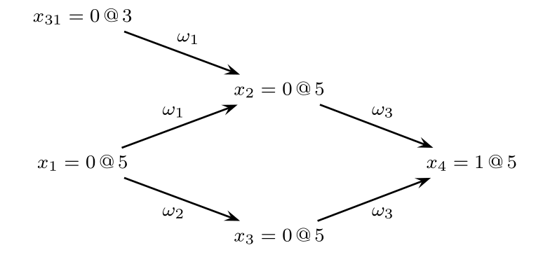
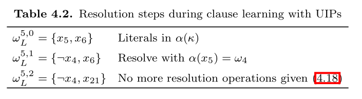
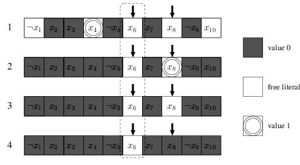

CDCL SAT Solver from Scratch
CDCL refers to [Conflict-Driven-Clause-Learning].
I hardly found any tutorial about how to implement a complete CDCL SAT solver with two-watched literals, to save someone, I decided to write one implementation of CDCL SAT solver, not the most efficient, but hopefully a submittable assignment.
I highly recommend you to refer this website with or without much understanding about how CDCL works.
The Theory
- Everything in this section is taken from Handbook of Satisfiability Chapter 4: Conflict-Driven Clause Learning SAT Solvers.
CDCL SAT solvers primarily inspired by DPLL solvers. DPLL corresponds to backtrack search, where each step a variable and a propositional value are selected for branching purposes. With each branching step, two values can be assigned to a variable: 0 or 1. Branching corresponds to assign the chosen value to the chosen variable. Afterwards, the logical consequences of each branching step are evaluated. Each time an unsatisfied clause (conflict) is identified, backtracking is executed.
If for the first branching step, both values have been considered, and backtracking undoes this first branching step, then the CNF formula can be declared unsatisfiable. This kind of backtrack is called chronological backtracking. Alternative backtracking scheme is non-chronological backtracking, which described later.
A state-of-art CDCL SAT solver involves a number of key techniques:
- Learning new clause from conflicts during backtrack search.
- Exploiting structure of conflicts during clause learning.
- Branching and restart heuristics.
I won't cover branching and restart heuristic here. They can be added to the code space relatively easily.
1. Notation
Propositional formulas are represented in Conjunctive Normal form (CNF).
- A finite set of Boolean variables \(X=\{x_1,x_2,\cdots,x_n\}\) is assumed.
- We use \(w\) to denote a clause.
- We use \(\phi\) to denote a CNF formula, consists of a conjunction of clauses.
- A literal \(l\) is either a variable \(x\) or its complement \(¬ x\).
Assignments
Assignments to the problem variables can be defined as a function \(\nu:X\to\{0,u,1\}\) where \(u\) denotes an undefined value.
- If all variables are assigned a value \(\{0,1\}\), then \(\nu\) is referred to as a complete assignment, otherwise it is a partial assignment.
- \(l^\nu\) denotes the value of a literal \(l\) under assignment \(\nu\).
- \(w^\nu\) denotes the value of a clause \(w\) under assignment \(\nu\).
- \(\phi^\nu\) denotes the value of the formula \(\phi\) under assignment \(\nu\).
\[ \begin{align} l^\nu &= \begin{cases} \nu(x_i),&l=x_i \\ 1-\nu(x_i),&l=¬ x_i \end{cases} \\ w^\nu &= \max\{l^\nu | l\in w\} \\ \phi^\nu &= \min\{w^\nu | w\in\phi\} \end{align} \]
Clauses
Clauses are characterized as unsatisfied, satisfied, unit, or unresolved.
- A clause is unsatisfied if all its literals are assigned to value 0 under the assignment.
- A clause is unit if all literals but one are assigned value 0, and the one literal are unassigned.
- A clause is satisfied if at least one of its literal is assigned to value 1.
- A clause is unresolved if neither falls in satisfied, unsatisfied or unit.
A key procedure in SAT solvers is the unit clause rule: if a clause is unit, then its sole unassigned literal must be assigned to value 1. The iterated application of unit clause rule is referred to as unit propagation or Boolean constraint propagation (BCP).
Unit propagation is applied after each branching step, and is used for identifying variables which must be assigned a specific Boolean value. If an unsatisfied clause is identified, a conflict condition is declared, and the algorithm backtracks.
Value, Antecedent and Decision Level
Each variable \(x_i\) is characterized by a number of properties, including the value, antecedent and the decision level of it.
The value of \(x_i\) is the assigned value of it given the assignment
\[ \nu(x_i) \in \{0,u,1\} \]
where 0 = False, 1 = True, \(u\) = Unassigned.
The antecedent of \(x_i\) is the unit clause \(w\) that implies it. For unassigned variables, or variables that are assigned by decision, then their antecedent is \(\tt NIL\).
$$ \alpha(x_i) \in \phi \cup\{\tt{NIL}\} $$
The decision level for a variable \(x_i\) denotes the depth of the decision tree at which the variable is assigned a value in \(\{0,1\}\). The decision level for an unassigned value \(x_i\) is \(-1\).
$$ \delta(x_i) = \max(\{0\}\cup \{\delta(x_j) \mid x_j \in w ∧ x_j \ne x_i\}) $$
The formula above says that the decision level of an implied literal is either the highest decision level of the implied literals in a unit clause, or \(0\) if the clause is unit.
We use \(x_i = v@d\) to denote that \(\nu(x_i) = v\) and \(\delta(x_i = d)\).
Implication Graph
During the execution of DPLL-style SAT solver, assigned variables as well as their antecedents define a directed acyclic graph \(I=(V_I,E_I)\) referred to as implication graph.
The vertices in the implication graph are defined by all assigned variables and possibly one special node \(\kappa\) - the conflict node. The edges in the implication graph are obtained from the antecedent of each assigned variable. If \(w=\alpha(x_i)\), then there is a directed edge from each variable in \(w\) (other than \(x_i\) to \(x_i\).
If unit propagation yields an unsatisfied clause \(w_j\), then a special vertex \(\kappa\) is used to represent the unsatisfied clause. The antecedent of \(\kappa\) is defined by \(\alpha(\kappa) = w_j\).
Example:
Consider the CNF:
\[ \begin{align} \phi_i &= w_1∧ w_2 ∧ w_3 \\ &= (x_1 ∨ x_{31} ∨ ¬ x_2) ∧ (x_1 ∨ ¬ x_3) ∧ (x_2 ∨ x_3 ∨ x_4) \end{align} \]
and assume the decision assignment \(x_{31}=0@3\) and \(x_1 = 0@5\), then their implication graph is:

2. Organization of CDCL Solvers
The figure shows the typical algorithm for CDCL:

The main differences to DPLL solver is the call to function \(\tt ConflictAnalysis\) each time a conflict is identified, and a call to \(\tt BackTrack\) when backtracking takes place.
- \(\tt UnitPropagation\) consists of the iterated application of the unit clause rule. If an unsatisfied clause is identified, then a conflict indication is returned.
- \(\tt PickBranchingValue\) selects a variable to assign a value.
- \(\tt ConflictAnalysis\) analyzes the most recent conflict and learn a new clause from the conflict.
- \(\tt AllVariablesAssigned\) tests whether all variables have been assigned.
Some techniques like search restarts and clause deletion are not included in the algorithm above.
- Search restarts cause the algorithm to restart itself, but already learnt clauses are kept.
- Clause deletion policies decide which learnt clauses can be deleted to saves memory.
3. Conflict Analysis
Learning Clauses from Conflicts
Each time the CDCL SAT solver identifies a conflict due to unit propagation, the \(\tt ConflictAnalysis\) procedure is invoked. One or more new clauses are learnt, and a backtracking decision level is computed.
Starting from a given conflict clause \(\alpha(\kappa)\), the conflict analysis procedure visits variables implied at the most recent decision level, identifies the antecedents of visited variables, and keeps from the antecedents of literals assigned at decision level less than the most recent decision level. This process is repeated until the most recent decision variable is visited.
Let \(\odot\) be the resolution operation. The resolution operation on two clause \(w_i\) and \(w_j\), for which there is a variable that \(x\) in one clause and \(¬ x\) in another clause, then the result of the resolution operation is all literals in \(w_i\) and \(w_j\) with the exception of \(x\) and \(¬ x\):
$$ w_i \odot w_j = w_i \cup w_j - \{x,¬ x\} $$
Now we show how the new clause is learnt. The clause learning process in SAT solvers can be defined by a sequence of selective resolution operations. At each step, it yields a new temporary clause, and the final clause is the newly learnt clause.
First, we define a predicate \(\xi(w,l,d)\) which means if a clause \(w\) has an implied literal \(l\) assigned at the current decision level \(d\).
\[ \xi(w,l,d) = \begin{cases} 1,&l\in w ∧ \delta (l) =d ∧ \alpha(l) \ne \tt NIL \\ 0,&\text {otherwise} \end{cases} \]
Let \(w_L^{d,i}\) with \(i=0,1,\cdots\) be the intermediate clause obtained after \(i\) resolution operations.
\[ w_L^{d,i} = \begin{cases} \alpha(\kappa),&i=0 \\ w_L^{d,i-1} \odot \alpha(l).&i\ne 0 ∧ \xi(w_L^{d,i-1},l,d) = 1 \\ w_L^{d,i-1},& i\ne 0 ∧ \forall _l \xi(w_L^{d,i-1},l,d)=0 \end{cases} \]
The explanation of \(w_L^{d,i}\):
- The initial intermediate clause is the antecedent of \(\kappa\), \(\alpha(\kappa)\).
- Afterwards, at each step \(i\), a literal \(l\) assigned at the current decision level \(d\) is selected from the current intermediate clause, the next intermediate clause \(w_{L}^{d,i}\) is the result of resolution between the current intermediate clause:
$$ w_L^{d,i} = w_L^{d,i-1} \odot \alpha(l) $$
- This continues until there left no literal in current intermediate clause with current decision level \(d\), or
$$ w_L^{d,i} = w_L^{d,i-1} $$
The last intermediate clause is the new learnt clause. The number of resolutions performed will not greater than number of variables \(|X|\).
Example: Given the formula, with the implication graph
\[ \begin{align} \phi &= w_1 ∧ w_2 ∧ w_3 ∧ w_4 ∧ w_5 ∧ w_6 \\ &= (x_1 ∨ x_{31} ∨ ¬ x_2) ∧ (x_1 ∨ ¬ x_3) ∧ (x_2 ∨ x_3 ∨ x_3) \\ &~~~~~(¬ x_4 ∧ ¬ x_5) ∧ (x_{21} ∨ ¬ x_4 ∨ ¬ x_6) ∧ (x_5 ∨ x_6) \end{align} \]

The table shows the resolution steps during clause learning.

There are many possible clauses to learn on one conflict. The learnt clause of method above is just the negation of literals of most recent decision level. However, we usually learn a new exploit the first UIP cut, explained in the next section:
Exploiting Structure with UIPs
A vertex \(u\) dominates another vertex \(x\) in a directed graph if every path from \(x\) to another vertex \(\kappa\) contains \(u\). A UIP (unique implication point) is a dominator in the implication graph, which dominates the decision vertex \(x\) with respect to the conflict vertex \(\kappa\).
In the implication graph, there is an UIP at decision level \(d\) when the number of literals in \(w_L^{d,i}\) assigned at decision level is 1. Let \(\sigma(w,d)\) be the number of literals in \(w\) assigned at decision level \(d\):
$$ \sigma(w,d) = |\{l \in w \mid \delta(l) = d\}| $$
The clause learning procedure with UIPs is given by
\[ w_L^{d,i} = \begin{cases} \alpha(\kappa),&i=0 \\ w_L^{d,i-1} \odot \alpha(l).&i\ne 0 ∧ \xi(w_L^{d,i-1},l,d) = 1 \\ w_L^{d,i-1},& i\ne 0 ∧ \sigma(w_L^{d,i-1},d) = 1 \end{cases} \]
CDCL SAT solvers stop clause learning at the first UIP.
Example: Again with the previous example
\[ \begin{align} \phi &= w_1 ∧ w_2 ∧ w_3 ∧ w_4 ∧ w_5 ∧ w_6 \\ &= (x_1 ∨ x_{31} ∨ ¬ x_2) ∧ (x_1 ∨ ¬ x_3) ∧ (x_2 ∨ x_3 ∨ x_3) \\ &~~~~~(¬ x_4 ∧ ¬ x_5) ∧ (x_{21} ∨ ¬ x_4 ∨ ¬ x_6) ∧ (x_5 ∨ x_6) \end{align} \]
The learning procedure stops at \((¬ x_4 ∨ x_{21})\) by taking into consideration that \(x_4=1@5\) is a UIP - the first UIP.
Finally, we start the code in next section.
The Implementation
In the code, I frequently use the dataclass from standard library. Basically it is just a shorthand for defining a small class storing only few properties. It saves the code for us to define __init__ function, and better default string representation:
from dataclasses import dataclass
@dataclass
class Animal:
name: str
kind: str
age: int
print(Animal('Pikachu', 'Cat', 3))
# output: Animal(name='Pikachu', kind='Cat', age=3)
It becomes clear on what a class stores.
Structures
Next, we implement the class for
- Literal =
var + negation? - Clause =
List[Literal] - Formula =
List[Clause]
Instead of representing them with primitive types, put them into individual classes are easier to read in my opinion.
The variables are represented as integer. First import all the standard libraries we used:
import sys
import random
from pprint import pprint
from dataclasses import dataclass
from typing import List, Set, Tuple, Optional, Iterator
Literal
# frozen to be hashable
@dataclass(frozen=True)
class Literal:
variable: int
negation: bool
def __repr__(self):
if self.negation:
return '¬' + str(self.variable)
else:
return str(self.variable)
def neg(self) -> 'Literal':
"""
Return the negation of this literal.
"""
return Literal(self.variable, not self.negation)
Clause
The clause is just a list of literals.
@dataclass
class Clause:
literals: List[Literal]
def __repr__(self):
return '∨'.join(map(str, self.literals))
def __iter__(self) -> Iterator[Literal]:
return iter(self.literals)
def __len__(self):
return len(self.literals)
Formula
The formula is just a list of clauses. We remove duplicate literals like \((1∨ 1 ∨ 2)\) and cache the variables in the constructor.
@dataclass
class Formula:
clauses: List[Clause]
__variables: Set[int]
def __init__(self, clauses: List[Clause]):
"""
Remove duplicate literals in clauses.
"""
self.clauses = []
self.__variables = set()
for clause in clauses:
self.clauses.append(Clause(list(set(clause))))
for lit in clause:
var = lit.variable
self.__variables.add(var)
def variables(self) -> Set[int]:
"""
Return the set of variables contained in this formula.
"""
return self.__variables
def __repr__(self):
return ' ∧ '.join(f'({clause})' for clause in self.clauses)
def __iter__(self) -> Iterator[Clause]:
return iter(self.clauses)
def __len__(self):
return len(self.clauses)
Assignment
Assignment class represent one assignment to a variable. It contains
- The value (
TrueorFalse) of what the variable assigned to. - The optional antecedent of this assignment. The antecedent is the clause that forced this assignment due to unit constraint. If this assignment is due to decision (guessing), then antecedent is
None. dl- The decision level of this assignment.
@dataclass
class Assignment:
value: bool
antecedent: Optional[Clause]
dl: int # decision level

An instance of Assignment contains the information in the red circle.
value= 0 (False)antecedent= \(\omega_2\)dl= 5
Assignments
Assignments is the partial assignments of variables, maps an int to Assignment. An efficient representation of assignments should be stored in a list trail, which improve the backtrack efficiency.
I also added a utility method value here.
class Assignments(dict):
"""
The assignments, also stores the current decision level.
"""
def __init__(self):
super().__init__()
# the decision level
self.dl = 0
def value(self, literal: Literal) -> bool:
"""
Return the value of the literal with respect the current assignments.
"""
if literal.negation:
return not self[literal.variable].value
else:
return self[literal.variable].value
def assign(self, variable: int, value: bool, antecedent: Optional[Clause]):
self[variable] = Assignment(value, antecedent, self.dl)
def unassign(self, variable: int):
self.pop(variable)
def satisfy(self, formula: Formula) -> bool:
"""
Check whether the assignments actually satisfies the formula.
"""
for clause in formula:
if True not in [self.value(lit) for lit in clause]:
return False
return True
Main Procedures
Having defined all the needed classes, now are the hard parts. We will implement the full CDCL solver here.
The CDCL algorithm generally follows the structure:
 Note that \(\nu\) above is the partial assignments, which represented by
Note that \(\nu\) above is the partial assignments, which represented by assignments in our code.
Translate it into Python code:
cdcl_solve
We return the learnt_clause from conflict_analysis, and add the learnt_clause to the formula afterward, and return the reason as well as the clause that are the cause of the reason from unit_propagation.
def cdcl_solve(formula: Formula) -> Optional[Assignments]:
"""
Solve the CNF formula.
If SAT, return the assignments.
If UNSAT, return None.
"""
assignments = Assignments()
# First, do unit propagation to assign the initial unit clauses
reason, clause = unit_propagation(formula, assignments)
if reason == 'conflict':
return None
while not all_variables_assigned(formula, assignments):
var, val = pick_branching_variable(formula, assignments)
assignments.dl += 1
assignments.assign(var, val, antecedent=None)
while True:
reason, clause = unit_propagation(formula, assignments)
if reason != 'conflict':
# no conflict after unit propagation, we back
# to the decision (guessing) step
break
b, learnt_clause = conflict_analysis(clause, assignments)
if b < 0:
return None
add_learnt_clause(formula, learnt_clause)
backtrack(assignments, b)
assignments.dl = b
# The learnt clause must be a unit clause, so the
# next step must again be unit progagation
return assignments
Next, we implement all the functions mentioned in cdcl_solve. Starts from the easy to hard.
add_learnt_clause
"Learning" a clause is just as simple as adding it to the formula.
def add_learnt_clause(formula: Formula, clause: Clause):
formula.clauses.append(clause)
all_variables_assigned
As simple as it is:
def all_variables_assigned(formula: Formula, assignments: Assignments) -> bool:
return len(formula.variables()) == len(assignments)
pick_branching_variable
Choose the next decision variable and its value based on our branching heuristic - no heuristic.
We randomly choose a variable in unassigned variables and randomly choose a value.
def pick_branching_variable(formula: Formula, assignments: Assignments) -> Tuple[int, bool]:
unassigned_vars = [var for var in formula.variables() if var not in assignments]
var = random.choice(unassigned_vars)
val = random.choice([True, False])
return (var, val)
backtrack
This function backtracks to decision level \(b\), removing all the assignment of variables with decision level \(\gt b\).
def backtrack(assignments: Assignments, b: int):
to_remove = []
for var, assignment in assignments.items():
if assignment.dl > b:
to_remove.append(var)
for var in to_remove:
assignments.pop(var)
unit_propagation
Next is unit propagation. We detect conflict or unit clause in this function, and return the reason and the corresponding clause.
def clause_status(clause: Clause, assignments: Assignments) -> str:
"""
Return the status of the clause with respect to the assignments.
There are 4 possible status of a clause:
1. Unit - All but one literal are assigned False
2. Unsatisfied - All literals are assigned False
3. Satisfied - All literals are assigned True
4. Unresolved - Neither unit, satisfied nor unsatisfied
"""
values = []
for literal in clause:
if literal.variable not in assignments:
values.append(None)
else:
values.append(assignments.value(literal))
if True in values:
return 'satisfied'
elif values.count(False) == len(values):
return 'unsatisfied'
elif values.count(False) == len(values) - 1:
return 'unit'
else:
return 'unresolved'
def unit_propagation(formula: Formula, assignments: Assignments) -> Tuple[str, Optional[Clause]]:
# finish is set to True if no unit and conflict clause found in one iteration
finish = False
while not finish:
finish = True
for clause in formula:
status = clause_status(clause, assignments)
if status == 'unresolved' or status == 'satisfied':
continue
elif status == 'unit':
# select the literal to propagate
literal = next(literal for literal in clause if literal.variable not in assignments)
var = literal.variable
val = not literal.negation
# assign the variable according to unit rule
assignments.assign(var, val, antecedent=clause)
finish = False
else:
# conflict
return ('conflict', clause)
return ('unresolved', None)
conflict_analysis
conflict_analysis finds the the backtrack level and the newly learnt clause, which comes from the first UIP cut.
It follows the formula (see the section above: Exploiting Structure with UIPs):
\[
w_L^{d,i} = \begin{cases}
\alpha(\kappa),&i=0 \\
w_L^{d,i-1} \odot \alpha(l).&i\ne 0 ∧ \xi(w_L^{d,i-1},l,d) = 1 \\
w_L^{d,i-1},& i\ne 0 ∧ \sigma(w_L^{d,i-1},d) = 1
\end{cases}
\]
We first define the resolution operation, then the main conflict_analysis function:
def resolve(a: Clause, b: Clause, x: int) -> Clause:
"""
The resolution operation
"""
result = set(a.literals + b.literals) - {Literal(x, True), Literal(x, False)}
result = list(result)
return Clause(result)
def conflict_analysis(clause: Clause, assignments: Assignments) -> Tuple[int, Clause]:
if assignments.dl == 0:
return (-1, None)
# literals with current decision level
literals = [literal for literal in clause if assignments[literal.variable].dl == assignments.dl]
while len(literals) != 1:
# implied literals
literals = filter(lambda lit: assignments[lit.variable].antecedent != None, literals)
# select any literal that meets the criterion
literal = next(literals)
antecedent = assignments[literal.variable].antecedent
clause = resolve(clause, antecedent, literal.variable)
# literals with current decision level
literals = [literal for literal in clause if assignments[literal.variable].dl == assignments.dl]
# out of the loop, `clause` is now the new learnt clause
# compute the backtrack level b (second largest decision level)
decision_levels = sorted(set(assignments[literal.variable].dl for literal in clause))
if len(decision_levels) <= 1:
return 0, clause
else:
return decision_levels[-2], clause
DIMACS CNF
The DIMACS CNF format is a textual representation of a formula in conjunctive normal form.
For example, the formula \((1∨2∨¬ 3) ∧ (¬ 2 ∧ 3)\) can be encoded as:
p cnf 3 2
1 2 -3 0
-2 3 0
parse_dimacs_cnf
Here is the code to parse DIMACS CNF file to a Formula, you can take it as given:
def parse_dimacs_cnf(content: str) -> Formula:
"""
parse the DIMACS cnf file format into corresponding Formula.
"""
clauses = [Clause([])]
for line in content.splitlines():
tokens = line.split()
if len(tokens) != 0 and tokens[0] not in ("p", "c"):
for tok in tokens:
lit = int(tok)
if lit == 0:
clauses.append(Clause([]))
else:
var = abs(lit)
neg = lit < 0
clauses[-1].literals.append(Literal(var, neg))
if len(clauses[-1]) == 0:
clauses.pop()
return Formula(clauses)
and we have just successfully implemented a CDCL solver in less than 300 lines of code, try it out:
if __name__ == '__main__':
# you might comment it to get inconsistent execution time
random.seed(5201314)
if len(sys.argv) != 2:
print('Provide one DIMACS cnf filename as argument.')
sys.exit(1)
dimacs_cnf = open(sys.argv[1]).read()
formula = parse_dimacs_cnf(dimacs_cnf)
result = cdcl_solve(formula)
if result:
assert result.satisfy(formula)
print('Formula is SAT with assignments:')
assignments = {var: assignment.value for var, assignment in result.items()}
pprint(assignments)
else:
print('Formula is UNSAT.')
Advanced: Two Watched Literals
In my experience, implementing the original CDCL algorithm is not the hard part. Most of the complexity and debug time lies on the lazy data structures - two watched literals.
You must read the two-watched literals section in the slide From DPLL to CDCL SAT solvers to understand the steps of two watched literals.
The main idea of two watched literals is: A clause with 2 non-false literals cannot be unit or conflicting.
In the following sections, we will modify our code to incorporate the two watched literals data structure in our CDCL solver.
Implementation
First, we initialize the core data structure lit2clauses and clause2lits, where
lit2clauses[lit]are the clauses that are watching literallitnow.clause2lits[c]are the literals that clausecare watching now. Ifcis unit clause,len(clause2lits[c]) == 1or elselen(clause2lits[c]) == 2.
from collections import defaultdict
def init_watches(formula: Formula):
"""
Return lit2clauses and clause2lits
"""
lit2clauses = defaultdict(list)
clause2lits = defaultdict(list)
for clause in formula:
if len(clause) == 1:
# For unit clause, we watch the only literal
lit2clauses[clause.literals[0]].append(clause)
clause2lits[clause].append(clause.literals[0])
else:
# For other clause, we choose any 2 literals to watch
lit2clauses[clause.literals[0]].append(clause)
lit2clauses[clause.literals[1]].append(clause)
clause2lits[clause].append(clause.literals[0])
clause2lits[clause].append(clause.literals[1])
return lit2clauses, clause2lits
We also add __hash__ function to the Clause class for it to be hashable. It is safe because literals shall not change after the formation of the clause.
@dataclass
class Clause:
literals: List[Literal]
def __repr__(self):
return '∨'.join(map(str, self.literals))
def __iter__(self) -> Iterator[Literal]:
return iter(self.literals)
def __len__(self):
return len(self.literals)
def __hash__(self):
x = 0
for lit in self.literals:
x ^= hash(lit)
return x
In the original CDCL algorithm, unit_propagation took most of the time, so the works of two watched literals lie most in unit_propagation.
You can run python -m cProfile -s time cdcl.py cnf_file to verify:
7405674 function calls (7404843 primitive calls) in 2.189 seconds
Ordered by: internal time
ncalls tottime percall cumtime percall filename:lineno(function)
832445 1.217 0.000 1.903 0.000 full-cdcl.py:182(clause_status)
1631505 0.262 0.000 0.262 0.000 full-cdcl.py:90(value)
270 0.191 0.001 2.100 0.008 full-cdcl.py:209(unit_propagation)
2417388 0.158 0.000 0.158 0.000 {method 'append' of 'list' objects}
841475 0.150 0.000 0.212 0.000 full-cdcl.py:34(__iter__)
842221 0.062 0.000 0.062 0.000 {built-in method builtins.iter}
301638 0.036 0.000 0.036 0.000 {method 'count' of 'list' objects}
306672/306669 0.022 0.000 0.022 0.000 {built-in method builtins.len}
...
For each clause, we will try to watch two non-false literals. With the exception of unit clause, we watch the only non-false literals.
If a literal becomes False, we visit the clause that contains it. Note that if a literal becomes True, then its negation becomes False.
-
First, we initialize the watches
clause2litsandlit2clausesfrom the formula. -
For each assignment, we put the assigned literal into a stack pending to propagate.
-
In
unit_propagate, we pop off the literalwatching_litto propagate, try to rewatchclause2lits[watching_lit], until conflict or the stack becomes empty.In the figure below, if \(x_6\) is to be assign
False, only 4 possible cases might arise.
- If we can find another non-false literal to rewatch, then rewatch it and all is fine. (case 1)
- If we cannot find another non-false literal to watch, and another watching literal is assigned
True, then do nothing. (case 2) - If we cannot find another non-false literal to watch, and another watching literal is unassigned, then the clause is unit, we assign it by unit rule and push it to the stack. (case 3)
- If we cannot find another non-false literal to watch, and another watching literal is assigned
False, then a conflict occurs, do the backtrack. (case 4)
def unit_propagation(assignments, lit2clauses, clause2lits, to_propagate: List[Literal]) -> Tuple[str, Optional[Clause]]:
while len(to_propagate) > 0:
watching_lit = to_propagate.pop().neg()
# use list(.) to copy it because size of
# lit2clauses[watching_lit]might change during for-loop
watching_clauses = list(lit2clauses[watching_lit])
for watching_clause in watching_clauses:
for lit in watching_clause:
if lit in clause2lits[watching_clause]:
# lit is another watching literal of watching_clause
continue
elif lit.variable in assignments and assignments.value(lit) == False:
# lit is a assigned False
continue
else:
# lit is not another watching literal of watching_clause
# and is non-False literal, so we rewatch it. (case 1)
clause2lits[watching_clause].remove(watching_lit)
clause2lits[watching_clause].append(lit)
lit2clauses[watching_lit].remove(watching_clause)
lit2clauses[lit].append(watching_clause)
break
else:
# we cannot find another literal to rewatch (case 2,3,4)
watching_lits = clause2lits[watching_clause]
if len(watching_lits) == 1:
# watching_clause is unit clause, and the only literal
# is assigned False, thus indicates a conflict
return ('conflict', watching_clause)
# the other watching literal
other = watching_lits[0] if watching_lits[1] == watching_lit else watching_lits[1]
if other.variable not in assignments:
# the other watching literal is unassigned. (case 3)
assignments.assign(other.variable, not other.negation, watching_clause)
to_propagate.insert(0, other)
elif assignments.value(other) == True:
# the other watching literal is assigned True. (case 2)
continue
else:
# the other watching literal is assigned False. (case 4)
return ('conflict', watching_clause)
return ('unresolved', None)
In the add_learnt_clause, we need to add the watches of the newly learnt clause, the literals to watch must be the most recent assigned literals (with largest decision level).
def add_learnt_clause(formula, clause, assignments, lit2clauses, clause2lits):
formula.clauses.append(clause)
for lit in sorted(clause, key=lambda lit: -assignments[lit.variable].dl):
if len(clause2lits[clause]) < 2:
clause2lits[clause].append(lit)
lit2clauses[lit].append(clause)
else:
break
Finally, the cdcl_solve function. We first initialize the watches and prepare the stack of literals to be propagated.
def cdcl_solve(formula: Formula) -> Optional[Assignments]:
"""
Solve the CNF formula.
If SAT, return the assignments.
If UNSAT, return None.
"""
assignments = Assignments()
lit2clauses, clause2lits = init_watches(formula)
# First, do unit propagation to assign the initial unit clauses
unit_clauses = [clause for clause in formula if len(clause) == 1]
to_propagate = []
for clause in unit_clauses:
lit = clause.literals[0]
var = lit.variable
val = not lit.negation
if var not in assignments:
assignments.assign(var, val, clause)
to_propagate.append(lit)
reason, clause = unit_propagation(assignments, lit2clauses, clause2lits, to_propagate)
if reason == 'conflict':
return None
while not all_variables_assigned(formula, assignments):
var, val = pick_branching_variable(formula, assignments)
assignments.dl += 1
assignments.assign(var, val, antecedent=None)
to_propagate = [Literal(var, not val)]
while True:
reason, clause = unit_propagation(assignments, lit2clauses, clause2lits, to_propagate)
if reason != 'conflict':
# no conflict after unit propagation, we back
# to the decision (guessing) step
break
b, learnt_clause = conflict_analysis(clause, assignments)
if b < 0:
return None
add_learnt_clause(formula, learnt_clause, assignments, lit2clauses, clause2lits)
backtrack(assignments, b)
assignments.dl = b
# The learnt clause must be a unit clause, so the
# next step must again be unit progagation
literal = next(literal for literal in learnt_clause if literal.variable not in assignments)
var = literal.variable
val = not literal.negation
assignments.assign(var, val, antecedent=learnt_clause)
to_propagate = [Literal(var, not val)]
return assignments
All is done!
Conclusion
You shall compare the running times with and without the two-watched literals data structure. As I mentioned, the I did not put much attention on the code efficiency, you can easily speed up the running time a lot by refactoring the codes.
Further, incorporating a branching heuristic and restart heuristic can significantly improve the running speed on large CNF instances. Fortunately, all of them are not as complex and hard-to-debug as a [two-watched literals CDCL solver] alone.